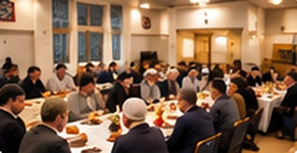
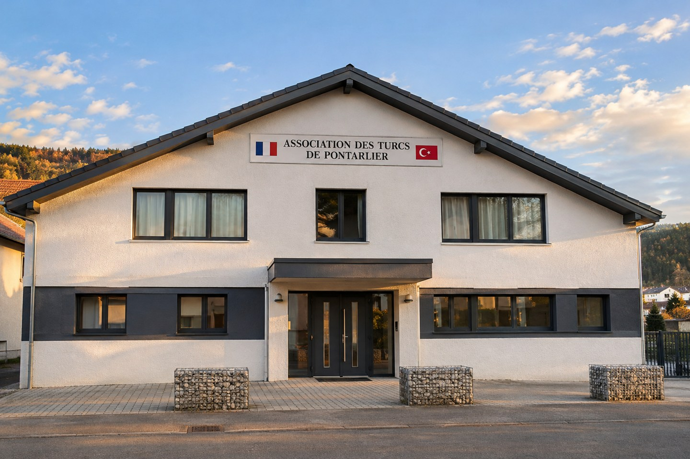

Actualités & activités
Tout voir →
Aucun événement daté n'est annoncé dans cette version de test.

Un lieu de culte, de culture et de rencontre pour toute la communauté.
Retrouvez les activités, les espaces de la mosquée et un lieu pour échanger ensemble.

Aucun événement daté n'est annoncé dans cette version de test.
Visuels d'illustration provisoires. Les photos originales seront réintégrées avant publication.
Posez une question ou partagez une idée, sans inscription.
L'association accueille les habitants autour de la prière, de la culture turque, de l'éducation et de l'entraide. La mosquée est un espace de rencontre et de transmission, ouvert à la communauté.
Nos services et nos espacesLes services de l'association, repris du site actuel.
Espaces de convivialité pour prendre un thé ou un café.
Billard et activités pour se retrouver.
Enseignement adapté aux enfants et aux adultes.
Enseignement de l'islam et éveil religieux pour les plus jeunes.
Une salle spacieuse et confortable.
Espaces dédiés aux femmes et aux hommes.
Accessibles également aux voyageurs et chauffeurs routiers de passage.
Renseignez-vous auprès de l'association pour devenir membre.
Les modalités officielles de don sont disponibles auprès de l'association.